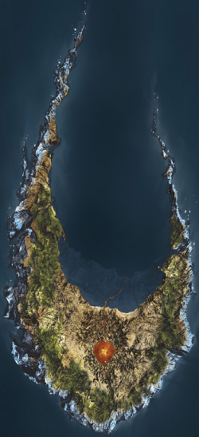

Before the Great Cataclysm, Voya Nui used to be part of a large underground continent. However, after the incident it ended up on the surface of Aqua Magna. Over time liquid Protodermis would cool in the water and form new land, expanding the island. This made the local Matoran build a second village, Mahri Nui, on the coast. Unfortunately Mahri Nui broke off and sand beneath the ocean centuries later.
Among the Matoran the island of Voya Nui was known as the Island of Doom or Daggers of Death, as the island was virtually a wasteland. The Matoran inhabitants were in constant danger living on the island which is why they all lived together in a single village.
A notable aspect about Voya Nui is that the Matoran Alphabet is written inside hexagons as opposed to circles the Matoran of Mata Nui and Metru Nui are accustomed to.